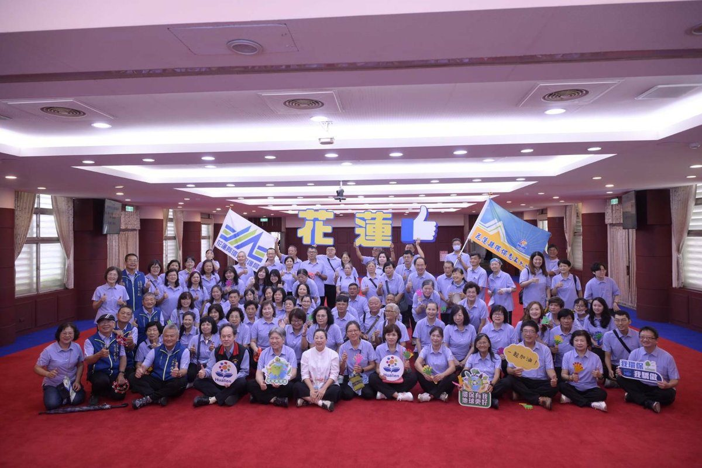

徐榛蔚授旗花蓮環保志工代表隊 出征全國群英會力拚佳績

可樂電子報小編/編輯
115年度「全國環保志（義）工群英會」即將於苗栗縣盛大登場，花蓮縣代表隊日前於縣政府大禮堂舉行莊嚴而熱絡的授旗典禮。花蓮縣長徐榛蔚親自出席為即將啟程征戰的志工代表隊授旗勉勵，並向長年在基層默默奉獻的環保志工夥伴致上最高敬意，期盼全體隊員在全國舞臺上展現花蓮守護環境的團隊向心力與豐碩成果。
本次花蓮縣代表隊由環境保護局主任秘書林蔡毓及環保志工大隊長陳智寬共同率領，隨行幹部亦包括副大隊長劉昌達等人全程支援照料。代表隊選手皆是經過全縣初賽嚴格選拔、脫穎而出的各社區優秀志工，將分別投入「資源灌籃高手」、「清掃接力賽」、「袋袋箱傳」以及「環保同心傳」等四項融合環保常識與體能技巧的趣味競賽。

代表隊陣容集結了三支實力堅強的在地隊伍，包括由賴興岳隊長帶領的「花蓮縣環境教育大使服務隊」、江均奇隊長領軍的「舞鶴翱翔隊」，以及楊淑玲隊長所帶領的「花蓮縣真誠社區發展協會」。各隊在取得全國賽參賽資格後，選手們利用公餘時間展開密集集訓，反覆演練競賽規則與戰術走位，彼此培養出深厚的默契，全力以赴迎戰各縣市好手。

縣長徐榛蔚致詞時表示，環境保護必須從日常生活深耕做起，環保志工秉持愛鄉愛土的精神，長年深入大街小巷維護市容與自然生態，是守護花蓮青山綠水最堅實的後盾。許多志工更同時身兼社區長者關懷與婦女志工等多重角色，在無私付出的過程中創造生命的價值與充實感，這份不求回報的奉獻熱情令人由衷敬佩與動容。

徐榛蔚也特別溫馨叮嚀選手們，出征在外除了全力爭取競賽榮譽之外，更要注重充足休息與健康維護，維持最佳精神狀態快樂參賽、安全賦歸。環保局表示，期盼透過全國群英會的良性競技與經驗交流，將各地的環保新知與社區治理理念帶回花蓮，持續凝聚全民力量，攜手打造宜居永續的花蓮幸福家園。